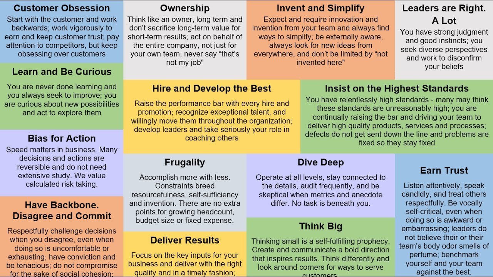

Amazon behavioral prepare
While interviewing with Amazon, the interviewers would ask you lots of behavioral questions based on Amazon leadership principles. The best way to prepare for your interview is to consider how you’ve applied the Leadership Principles in your previous professional experience.

Customer Obsession
Leaders start with the customer and work backwards. They work vigorously to earn and keep customer trust. Although leaders pay attention to competitors, they obsess over customers.
Who was your most difficult customer?
Give me an example of a time when you did not meet a client’s expectation. What happened, and how did you attempt to rectify the situation?
When you’re working with a large number of customers, it’s tricky to deliver excellent service to them all. How do you go about prioritizing your customers’ needs?
Tell the story of the last time you had to apologize to someone.
Ownership
Leaders are owners. They think long term and don’t sacrifice long-term value for short-term results. They act on behalf of the entire company, beyond just their own team. They never say “that’s not my job".
Tell me about a time when you had to leave a task unfinished.
Tell me about a time when you had to work on a project with unclear responsibilities. (discuss the spec)
Provide an example of when you personally demonstrated ownership. (show the design document, demo, suggest feature)
Tell me about a time you went above and beyond.(above and beyond, means do more than you need to)
Tell me about a time when you took on something significant outside your area of responsibility. Why was it important? What was the outcome?
Describe a project or idea (not necessarily your own) that was implemented primarily because of your efforts. What was your role? What was the outcome? (auth function)
Give an example of when you saw a peer struggling and decided to step in and help. What was the situation and what actions did you take? What was the outcome? (lead junior engineer)
Invent and Simplify
Leaders expect and require innovation and invention from their teams and always find ways to simplify. They are externally aware, look for new ideas from everywhere, and are not limited by “not invented here". As we do new things, we accept that we may be misunderstood for long periods of time.
Tell me about a time when you gave a simple solution to a complex problem.
Tell me about a time when you invented something.
What improvements have you made at your current company?
Tell me about a time you had to think outside the box (think creatively) to close a sale or sell your product.
What is the most innovative project you’ve worked on?
###Leaders are Right A Lot###Leaders are right a lot. They have strong judgment and good instincts. They seek diverse perspectives and work to disconfirm their beliefs. We should be willing to look for better ways to do something, even if it’s something that we already handle well. Smart people is flexible and open minded.
tell me about a time when you are wrong
tell me about a time when you had to work with incomplete data or information(PCS init)
make a decision, but also consider the opinions of the other people(PCS init)
Learn and Be Curious
Leaders are never done learning and always seek to improve themselves. They are curious about new possibilities and act to explore them.
How do you find the time to stay inspired, acquire new knowledge, innovate in your work?(seminar)
Tell me about a time when you influenced a change by only asking questions. (ImageMaker console format)
Tell me about a time when you solved a problem through just superior knowledge or observation. (MD5 tool)
How do you stay inspired, acquire new knowledge, or innovate in your work?(seminar)
What can you teach me in 5 minutes that I don’t already know?(ImageMaker console)
Tell me about a time you hired someone smarter than you.
Tell me something interesting you’ve learned recently.(seminar)
Hire and Develop the best
Leaders raise the performance bar with every hire and promotion. They recognize exceptional talent, and willingly move them throughout the organization. Leaders develop leaders and take seriously their role in coaching others. We work on behalf of our people to invent mechanisms for development like Career Choice.
Tell me about a time when you had to deal with a poor performer on your team.(junior engineer)
What is your experience with hiring people?
How do you ensure you hire the best people?
Give me an example of one of the best hires of your career. How did this person grow throughout their career? What did you identify during the hiring process that drove her success?
How do you help your employees grow?(junior engineer)
Tell me how you help your team members develop their careers. Can you give me two to three examples of a specific person in whom you invested and how you helped them develop their careers, including one who wasn’t being successful but in whom you saw potential and chose to invest?(junior engineer)
Give me an example of a time you provided feedback to develop and leverage the strengths of someone on your team. Were you able to positively impact that person’s performance? What were your most effective methods?(junior engineer)
How do you manage your top performers differently?
Give me an example of someone who was promoted one or two levels up in the organization, not just because they were a star who would naturally rise, but due to your coaching efforts. (junior engineer)
What is the composition of your current team, and how is your team organized?
Insist on highest standard
Leaders have relentlessly high standards - many people may think these standards are unreasonably high. Leaders are continually raising the bar and driving their teams to deliver high quality products, services and processes. Leaders ensure that defects do not get sent down the line and that problems are fixed so they stay fixed.
Tell me about a time when you could have stopped working but persisted.(PCS latency improvement)
Tell me about a time when you mentored someone.(junior engineer)
Tell me when you need to sacrifice short-term benefit for long-term goal(PCS latency improvement)
Tell me about a time when you’ve been unsatisfied with the status quo. What did you do to change it? Were you successful? (short development cycle)
Tell me about a time you wouldn’t compromise on achieving a great outcome when others felt something was already good enough. What was the situation? (PCS)
What measures have you personally put in place to ensure performance improvement targets and standards are achieved? (short development cycle)
Describe the most significant, continuous improvement project that you’ve led. What was the catalyst for this change and how did you go about it?(PCS load balance)
Give me an example of a goal you’ve had where you wish you had done better. What was the goal and how could you have improved on it?
Tell me about a time when you worked to improve the quality of a product / service / solution that was already getting good customer feedback? Why did you think it needed more improvement?
Give an example where you refused to compromise your standards around quality/customer service, etc. Why did you feel so strongly about the situation? What were the consequences? The result?(PCS load balance)
Bias for action
Speed matters in business. Many decisions and actions are reversible and do not need extensive study. We value calculated risk taking.
Describe how you would handle a busy situation where three people are waiting for help from you
Describe a time when you saw some problem and took the initiative to correct it rather than waiting for someone else to do it.(FW auth function)
Tell me about a time when you took a calculated risk.(prototype, with fixed port, change it to automate method)
Tell me about a time you needed to get information from someone who wasn’t very responsive. What did you do?(field engineer, wrong issue report on ImageMaker)
Tell me about a time you took a risk. What kind of risk was it?
Give me an example of a calculated risk that you have taken where speed was critical. What was the situation and how did you handle it? What steps did you take to mitigate the risk? What was the outcome?
Tell me about a time you had to make a decision with incomplete information. How did you make it and what was the outcome?(PCS)
Describe a situation where you made an important business decision without consulting your manager. What was the situation and how did it turn out?
Tell me about a time when you had to analyze facts quickly, define key issues, and respond immediately to a situation. What was the outcome?
Tell me about a time when you have worked against tight deadlines and didn’t have the time to consider all options before making a decision. How much time did you have? What approach did you take?
Give an example of when you had to make an important decision and had to decide between moving forward or gathering more information. What did you do? What information is necessary for you to have before acting?
Describe a time when you saw some problem and took the initiative to correct it rather than waiting for someone else to do it.
Frugality
Accomplish more with less. Constraints breed resourcefulness, self-sufficiency and invention. There are no extra points for growing headcount, budget size or fixed expense.
Instead of investing time to develop new tools, use existed and verified tools to accomplish tasks.
Tell me about a time where you thought of a clever new way to save money for the company.
Tell me about a time when you had to work with limited time or resources.
Dive Deep
Leaders operate at all levels, stay connected to the details, audit frequently, and are skeptical when metrics and anecdote differ. No task is beneath them.
Tell me about a time when you had to dive deep into the data and the results you achieved.
tell me about a time when you dived deep/drilled down to find the root issue.
Earn Trust
Leaders listen attentively, speak candidly, and treat others respectfully. They are vocally self-critical, even when doing so is awkward or embarrassing. Leaders do not believe their or their team’s body odor smells of perfume. They benchmark themselves and their teams against the best.
Tell me about a time you made a serious mistake at work.
Tell me how that project you were leading failed.
Have backbone disagree and commit
Leaders are obligated to respectfully challenge decisions when they disagree, even when doing so is uncomfortable or exhausting. Leaders have conviction and are tenacious. They do not compromise for the sake of social cohesion. Once a decision is determined, they commit wholly.
Tell me about a time when you did not accept the status quo.
Tell me about an unpopular decision of yours.
Tell me about a time when you had to step up and disagree with a team members approach.
If your direct manager was instructing you to do something you disagreed with, how would you handle it?
Deliver Result
Leaders focus on the key inputs for their business and deliver them with the right quality and in a timely fashion. Despite setbacks, they rise to the occasion and never settle.
Think Big
Thinking small is a self-fulfilling prophecy. Leaders create and communicate a bold direction that inspires results. They think differently and look around corners for ways to serve customers.
Tell me about a time when you proposed a new business
Tell me about a time you took a calculated risk in order to achieve a professional goal. What were the tradeoffs? What was the outcome?
Tell me about a time you took a big risk and it failed. What did you learn? What would you do differently?
Tell me about a time you went way beyond the scope of the project and delivered.
Tell me about your proudest professional achievement.
Give me an example of a radical approach to a problem you proposed. What was the problem and why did you feel it required a completely different way of thinking about it? Was your approach successful?
How do you drive adoption for your vision/ideas? How do you know how well your idea or vision has been adopted by other teams or partners? Give a specific example highlighting one of your ideas.
Tell me about time you were working on an initiative or goal and saw an opportunity to do something much bigger than the initial focus.
Tell me about a time you looked at a key process that was working well and questioned whether it was still the right one. What assumptions were you questioning and why? Did you end up making a change to the process?
reference:
https://www.amazon.jobs/en/landing_pages/in-person-interview